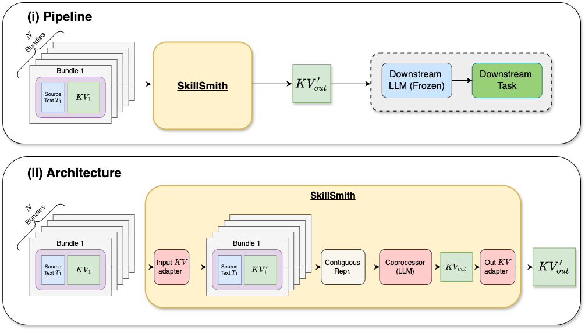
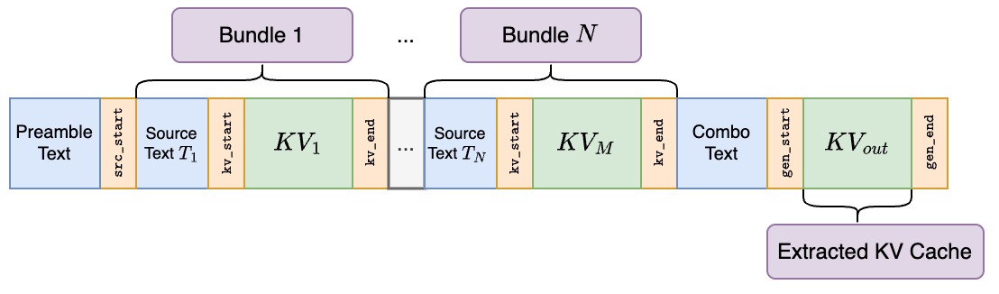
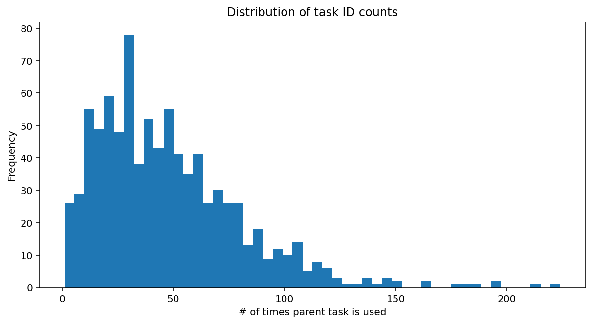
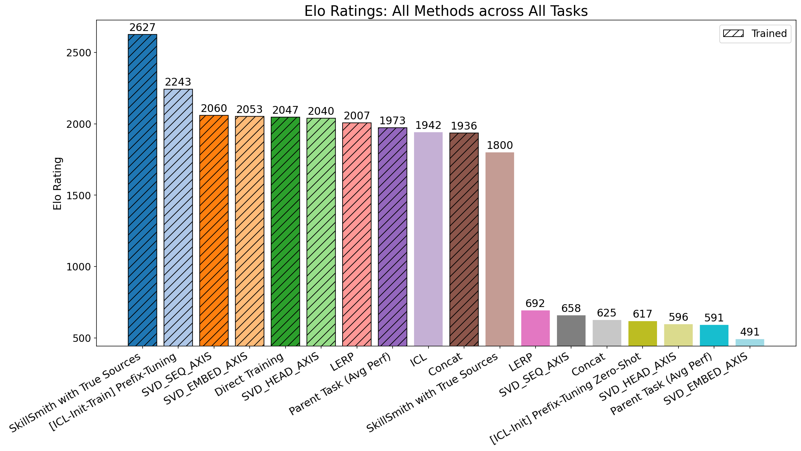
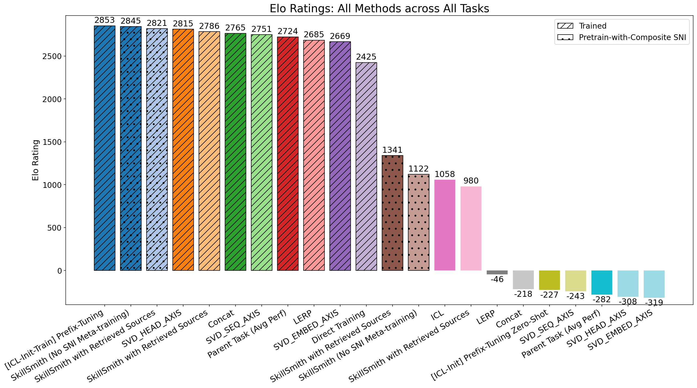
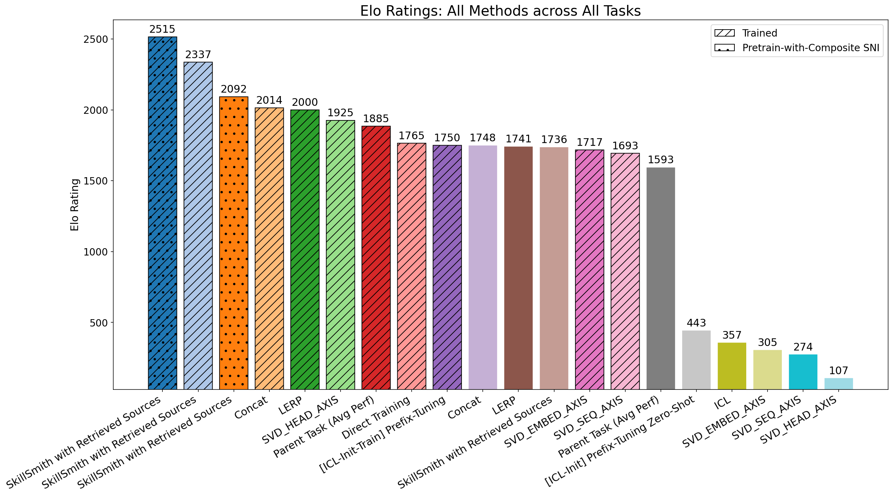
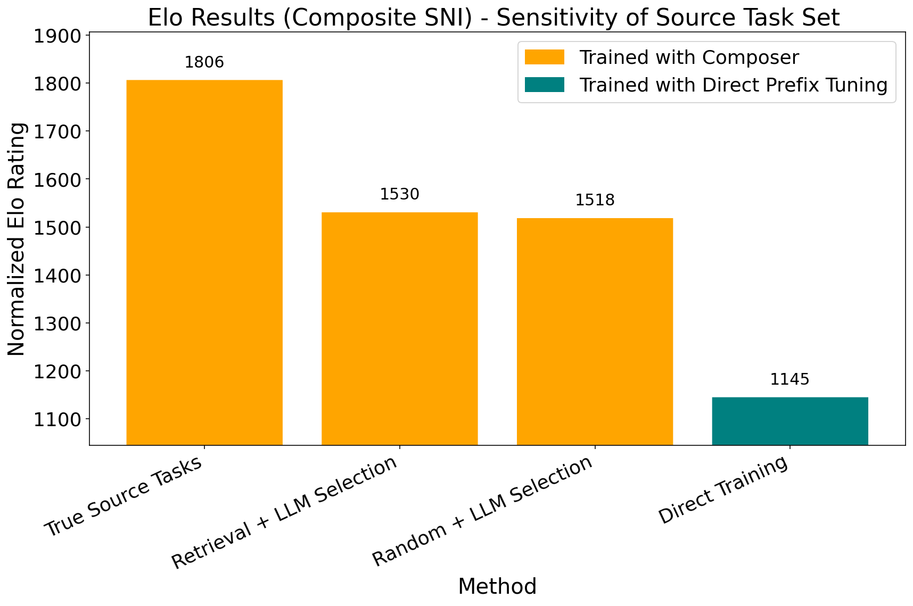

LLM驱动的agentic系统要自主解决复杂问题，靠两条机制：从过往经验合成基于文本的知识与流程，以及为重复出现的子目标构建参数化（权重空间）技能库。但至今研究基本把两者当作正交追求：要么用文本合成与反思整理知识，要么用权重合并巩固参数化技能；文本与权重在同一个周期内无缝结合、用于针对性性能提升，几乎没被探索。 SkillSmith弥合这道模态鸿沟：把模型权重当作LLM能原生推理的附加模态。它用prefix-tuning实例化参数化学习，让增强后的LLM（即SkillSmith）同时摄入prefix权重和捕获目标能力关系的丰富文本数据，进行指令引导的参数合成，直接输出体现目标技能的新的prefix权重。实验表明它显著超过纯文本和纯权重端基线，解锁了单模态适应够不到的性能增益。
LLM已从静态对话界面演化为agentic系统的驱动核心，能解决需要复杂多步推理的问题。这类系统的核心在于能从过往经验学习和适应。当前这种适应由两个强大但各自孤立的机制驱动：第一是文本知识的合成：agent用自然语言（自我反思、结构化记忆、prompt生成）指导后续推理与规划；第二是构建参数化技能库：通过参数高效微调（PEFT）把学到行为固化成可独立检索或合并的模块化权重，以高效处理重复子目标。
尽管agentic研究蓬勃，社区仍把文本推理和参数化技能获得视为正交追求。我们认为这种割裂限制了agentic系统的潜力。 让agent能同时在权重空间和文本上推理，可以解锁跨参数化技能的组合泛化，且组合与泛化的轴能通过指令文本灵活引导。
举一个具体例子：某个agent拥有一套解决各子任务的模型（参数化技能），以及部署它们的丰富文本策略。过去互动中，它在一个会话训练了英译Twi语的prefix-cache，在另一个会话编译了分析英文法律文档的详尽笔记。当遇到新任务（例如分析一份Twi语法律文档），agent推理出解法需要组合既有技能：英译Twi、Twi语言建模、法律文档分析。但尽管agent能文本化地表达这种迁移，目前没有任何机制让它把这种推理连同权重空间的翻译技能、Twi语言技能一起，直接合成为新问题对应的任务权重。

这项工作的核心主张：权重空间输入可以被当作一种附加模态，由适当增强的预训练LLM原生处理。 这个增强LLM就是SkillSmith，被训练成同时在文本和权重空间输入上推理，从而能为下游部署直接生成任务专属的参数化技能。
具体实现分步：先把参数化技能学习实例化为prefix-tuning（prefix-tuning生成用于调制下游LLM的prefix缓存/权重）。然后训练SkillSmith摄入两方面：① prefix权重，连同这些权重所解决问题对应的丰富文本元数据；② 额外文本元数据，捕获（权重）技能与期望目标能力之间的功能关系。目标能力由高层文本描述或few-shot样本指定，SkillSmith输出的prefix权重直接在目标任务上端到端优化（类似end-to-end可微风格）。

这带来可灵活组合的两条优势：组合轴由指令文本驱动（能针对用户意图调节合成的方向），泛化轴落在权重空间（能直接产出可部署的技能）。SkillSmith把参数空间当作可读、可合成的模态：这正是它区别于纯文本或纯权重基线的地方。
论文还梳理了一个重要空白：现有PEFT合并工作几乎聚焦于LoRA模块，对prefix-tuning的简单合并方法缺乏系统baseline。 这篇工作补齐了对prefix-tuning的重量端合并方法的全面研究。
要在规模上研究混合模态组合，需要知道任务间ground-truth关系的数据集。为此论文贡献了一套数据生成流程，产出Composite-SNI：一个合成的组合泛化数据集。
方法：系统性提示Gemini 2.5，从Super Natural Instructions（SNI）数据集的两个输入任务出发，生成需要同时具备这两个任务技能组合的新任务。这样创造了一个「目标能力对应的真实输入任务已知」的环境：尤其适合验证SkillSmith在已知源选择下能否原样组合技能。
数据统计颇具规模：每个生成的组合任务平均约69个样本实例，部分任务实例数超过150；基础SNI任务在最终组合任务列表中出现频次差异巨大，有的SNI任务出现在超过200个组合任务中，但多数平均出现在48个下游任务里。 论文将展示这种合成数据能被有效引导（bootstrap）：在任务数量有限的环境里，用合成数据帮助启动「文本+权重」的组合学习。

论文用4B Gemma 3同时作为SkillSmith和下游任务求解器，在Composite-SNI、SNI、MMLU-ProX三个数据集上评测。先看有ground-truth源任务设置的Composite-SNI：这能排除近似检索选取源任务带来的噪音，做无混淆的分析。
在15个meta-test任务上，SkillSmith在合成文本与prefix-cache信息、解决新目标能力上显著胜过所有基线（图3 Elo）。零样本（zero-shot）模式下：在目标任务上做任何直接训练前评测合成的prefix-cache：SkillSmith稳定超过全部方案。这印证了它的核心设计：语言模型能像处理文本一样，原生推理自己的模块化权重。

SNI与MMLU-ProX：SkillSmith在SNI的10个严格heldout meta-test任务（图4）与MMLU-ProX的6个meta-test任务（图5）上同样获得更高Elo。图6用spider图对比不同方法在多个维度上的NLL（越小越好），图7进一步把15个Composite-SNI meta-test任务按三类拆解，观察不同方法组的泛化差异。

最关键的结论之一是参数初始化优势：把SkillSmith生成的prefix权重作为初始参数，在目标任务上进一步微调后，得到的表示要么优于、要么持平所有其它方法：包括直接用上下文示例（ICL）初始化后训练prefix-cache的方法。也就是说，SkillSmith提供一个显著更优的针对性适应初始化，让参数空间成为可读、可合成、可扩展的模态。

真实场景中，目标能力对应的输入任务集往往未知。论文为此引入一个基于retriever的方法：当set输入任务到目标能力的ground-truth映射未知时，先检索一组候选源任务，再把它们喂给SkillSmith。
在必然引入噪音的noisy设置下，即便没有ground-truth，合成一组智能挑选的源任务也能提升目标任务性能（图10）。SkillSmith仍然能从候选源任务中提取并组合有效信号（如果存在的话），在等条件下生成的prefix权重优于基线。

这增强了SkillSmith的实用价值：它不依赖任务映射的先验知识，而是靠模型对「哪些技能该组合来达成目标」的语义判断：正是把权重当作文本一样可推理的模态才使得这种判断成为可能。
参考：https://arxiv.org/abs/2607.27497